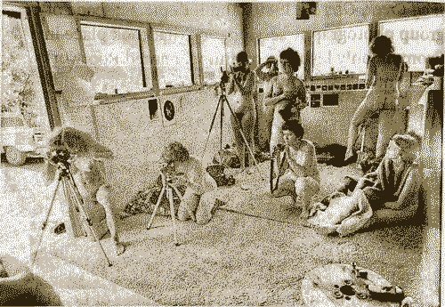

In comparison to L‘atelier des femmes peintres, we see that conditions for women in artistic pursuit have dramatically changed. At this point in the 1980s, women had founded the liberation movement, moved into the workforce, and were becoming professional artists at a much higher, photographers.
The photography workshops were set up by Ruth and Jean Mountaingrove, entitled Ovulars, a self-determined name that rejected and subverted the known
term ‚seminar‘, which means the spreading of semen and acts as a signifier for patriarchal education, something they wanted to break away from.
The photographs were subsequently used in publications that the commune collectively produced.

Photographers at the Ovular,
a feminist photography workshop at Rootworks,
Wolf Creek, Oregon 1980
In the 1970s and 80s lesbian feminist separatist communes sprung up over the United States, mainly in Southern Oregon,
California and New Mexico. These communes were known as "lesbian lands". For the first time, women owned plots of
land and ran autonomous, self-sufficient local communities as part of the 1970s "back-to-the-land"movement.
Art and writing workshops held great importance; self-publications were collectively
created containing material from the workshops themselves.
JEB (Joan E. Biren),
Jody Rognac,
Living HerStory,
Vouge 2017
This helped earn an income and promote the stories and visions of these women‘s new lives, aiming to inspire others what was possible.
This was a new model of living and an escape from mainstream society.
While separatism has been criticised and somewhat reinforces the popular patriarchal opinion from mass media that feminism is "anti-male", it could instead be considered as a strategy; a"first-step" period that practises temporary withdrawal from mainstream activism to accomplish specific goals or enhance personal growth.
Self Healing,
Carmen Wintant , 2016,
Found images, acrylic paint, matboard,
painter's taoe, coloured pencil